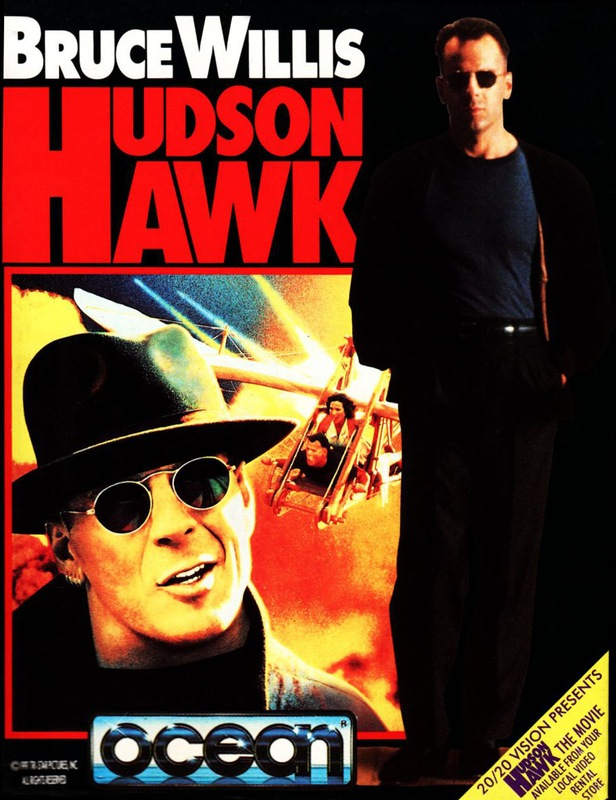
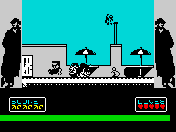

Hudson Hawk


{kind=link}

| Publisher: | Ocean |
| Price: | £10.99 |
| Year: | 1991 |
| Source: | CRASH, Issue 94 |

Despite the panning the movie received at the cinema, Ocean have pixellated the antics of Bruce ‘Die Hard’ Willis to produce Hudson Hawk, the computer game. MARK CASWELL dons a raincoat and adopts a silly French accent to investigate a recent spate of burglaries.

Our hero’s a cat burglar, who after a stretch in the slammer is determined to go straight. But a gang of crooks have different ideas. They’ve kidnapped The Hawk’s best pal and unless he half-inches three very valuable Da Vinci artefacts for them, Hudson’s friend is going to be very brown bread. He reluctantly agrees to help, but soon finds there’s more to the situation than meets the eye.
The criminals are secretly working on a scheme called ‘The Alchemy Project’ — a machine that produces gold. But they need the three artefacts to complete it, and once they’ve got it running, they plan to rule the world through economic leverage. It’s up to you as Hudson Hawk to steal the artefacts, but to use them as a bargaining point to secure your friend’s release.

in the opening scenes!
There are three levels to the game (three levels, three artefacts — simple, eh?). The first sends you to Rutherford’s Auction House to retrieve Leonardo Da Vinci’s horse sculpture — the ‘Sforza’ (excuse me while I push my teeth back into place).
The Hawk starts the game on the roof of the building adjoining the auction house. His first task is to perform a little rooftop hopping before entering the building via an open window. But life isn’t that simple because as a tea leaf Hudson isn’t at all welcome.
At the bottom of the screen is a large green bar (you can’t miss it), which is your energy indicator. Contact with the guard dogs, security guards, various automated security devices and birds that crap on you knock this down.
BAT ’ER UP!
But you’re not defenceless, you’ve got a supply of baseballs to lob at attackers (replacements can be found scattered around). If all else fails, you can punch your assailant’s lights out. Once inside the building, Hudson finds himself on a staircase with five floors below him (numbered 11-7), a door leading into each. Your aim’s to reach the safe on the seventh floor, but you have to explore the other rooms (in order) first.
Each level is split into several parts and in level one you search rooms, dodge security alarms / guards / laser guns and even crawl through air vents (very Die Hardish). With luck, you can then snaffle the Sforza and it’s on to level two, where the wanted object is the ‘Codex’, Mr Da Vinci’s personal sketchbook. This is on show in the halls of the Vatican, so along with the usual security measures you have to face some very unfriendly nuns (the mind boggles — Ed).
If you manage to escape from Jean-Paul’s residence you still have to find the third and final object, safely housed in Leonardo Da Vinci’s castle. The ‘Mirrored Crystal’ is the only thing capable of destroying the Gold Machine, and thus putting an end to the Alchemy Project. Of course, there are plenty of ruffians out to duff you over, but the life of your friend and the fate of the world rests in your hands.
IT’S A FAIR COP, GUV
Even if the movie version is a turkey, it certainly doesn’t reflect on the game, which is an arcade puzzle fan’s dream come true. The first section throws several brain teasers at you, including how to cross from one rooftop to the other and how to enter a high window.
Although every problem has its solution, some take some finding. One of your biggest headaches is sneaking past the security beams in the walls and the pressure pads set in the floor.
For the first few attempts, Hudson Hawk’s pretty hair-tearing: many times I flung the joystick down, muttering ‘@$*£#c* game!’
Graphically, Hudson Hawk’s outstanding. The game was programmed by Special FX’s James Bagley, the man who brought Batman — The Caped Crusader and Midnight Resistance to your screens. Hudson’s a beefy little chap who, with his Vanilla Ice hairstyle and hoopie shades, is a most excellent dude. The sprites for the main part are monochrome, with a bit of colour splashed around the backgrounds. The rottweilers that appear throughout the game made me chortle the most — they look just like the Spitting Image puppets!
Go out and buy Hudson Hawk, now! And no half-inching it from the shop!
MARK — 93%
The Hudson Hawk film got a right royal slating by the critics but this game features some of the best sprite animation I’ve ever seen. The first time that rottweiler grabbed me by the pants and threw me off the roof I nearly died laughing! The gameplay is exciting and original, and while not being instantly addictive, it certainly grows on you. One gripe comes to mind, though. The sprite masking Is occasionally a little wonky — Bruce Willis can hang onto the edge of a platform by his toenails, making the game look a little dated In places. Ocean have certainty latched onto a sense of the ridiculous in this tongue-in-cheek game — I mean, fancy throwing tennis balls at pigeons who deplete your energy by crapping on you — very silly! All in all, though, Hudson Hawk is a challenging game that oozes character. A worthy CRASH Smash that will keep you occupied for ages.
LUCY — 90%
RATING
Hudson Hawk is an arcade puzzler’s dream. Ocean have produced yet another winner.
| Presentation: | 90% |
| Graphics: | 92% |
| Sound: | 85% |
| Playability: | 89% |
| Addictivity: | 90% |
| Overall: | 92% |